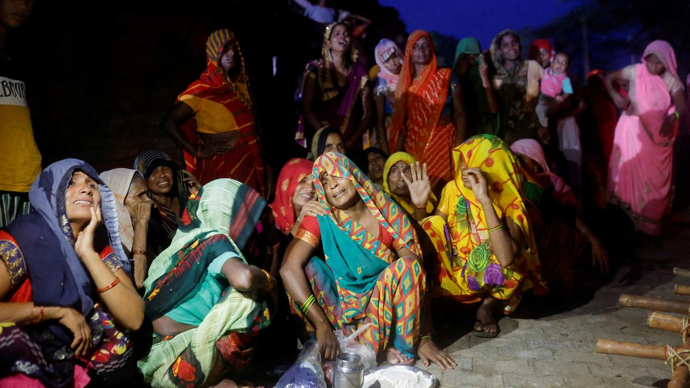

SC grants interim bail to Arvind Kejriwal in PMLA case, says he should take a call on stepping down as CM
Kejriwal however will not be released as he is under CBI arrest and in remand; SC refers to larger Bench the question whether accused can invoke ‘need and necessity of arrest’ as a separate ground to quash his arrest
Voting under way for crucial council elections in Maharashtra
Voting for the biennial elections to 11 seats in the Maharashtra Legislative Council began at the Vidhan Bhavan Complex here on Friday morning. Shiv Sena’s Sanjay Gaikwad was the first to cast his vote through the secret ballot system.
Omar, Lone seek ‘timely’ Assembly elections in Jammu & Kashmir
Fearing that the BJP-led Union government may delay the scheduled Assembly election in Jammu & Kashmir due to an uptick in militancy, J&K National Conference (JKNC) vice-president Omar Abdullah and J&K Peoples Conference (JKPC) president Sajad Lone on July 11 underlined the urgency to hold the much-awaited election in the Union Territory (UT). “If you have to bow down in front of these powers, who are attacking you, then don’t do the election. If you have to prove the supremacy of militancy in comparison to the supremacy of your Army and police, then don’t do the election,” Mr. Abdullah, who attended special prayers at the graveyard of his grandmother Akbar Jehan on her death anniversary, said.
Centre fields BSF, CISF D-Gs to reiterate commitment on 10% reservation for Agniveers in CAPFs
As Centre feels the heat on Agnipath scheme, it fielded the chiefs of the Central Industrial Security Force (CISF) and Border Security Force (BSF) to reiterate the government’s commitment to reserve 10% vacancies in Central Armed Police Forces (CAPFs) for Agniveers. The first batch of Agniveers will be eligible for recruitment in CAPFs such as CISF, BSF, Central Reserve Police Force (CRPF), Indo-Tibetan Border Police (ITBP), Sashastra Seema Bal (SSB) and Assam Rifles in 2026.
Centre begins efforts to implement Labour Codes
Almost a month after the swearing-in of the Narendra Modi government for the third term, the Union Labour Ministry has started efforts to implement the four Labour Codes, which were passed in Parliament in its second term in 2019 and 2020. New Union Labour Minister Mansukh Mandaviya and Union Labour Secretary Sumita Dawra have started meeting representatives of various trade unions seeking their cooperation to implement the controversial legislation. Though passed in both Houses, the codes are not yet operational apparently due to the objection of trade unions. The Centre has been maintaining that some States are yet to frame the rules for the codes. Almost all the States have framed the rules and the Centre had said it was helping those States which could not draft the rules to complete the process. The Central Trade Unions (CTUs) had opposed the implementation of the codes citing that they will curtail trade unions’s rights and social security measures for workers. Recently, the Citigroup had said in its employment analysis report on India that implementing the four Labour Codes could improve the “ease of doing business” scenario in the country.
Hathras stampede: Supreme Court dismisses plea to form an expert panel to supervise probe
The Supreme Court on July 12 dismissed a petition seeking the constitution of an expert committee to inquire into the Hathras stampede which has seen more than 121 deaths. A Bench headed by Chief Justice of India D. Y. Chandrachud asked petitioner-lawyer Vishal Tiwari why he had not approached the Allahabad High Court and come directly to the apex court.
SC grants interim bail to Arvind Kejriwal, refers plea challenging ED arrest to larger Bench
The Supreme Court on July 12 granted interim bail to Delhi Chief Minister Arvind Kejriwal in the money laundering case initiated by the Enforcement Directorate (ED) in relation to the now-scrapped Delhi Excise policy. A Bench comprising Justices Sanjiv Khanna and Dipankar Datta however observed that certain legal questions arising out of Mr. Kejriwal’s plea challenging his arrest by the central agency need to be referred to a larger Bench. However, the Chief Minister will continue to remain in Tihar jail as he has been separately arrested by the Central Bureau Of Investigation (CBI) in a corruption case related to the alleged scam.
SC Collegium recommends judge from Ladakh for his first High Court Chief Justiceship
The Supreme Court Collegium headed by Chief Justice of India D.Y. Chandrachud on Wednesday recommended Justice Tashi Rabstan to be appointed Chief Justice of the High Court of Meghalya. Justice Rabstan would be the first Chief Justice from the region of Ladakh which has otherwise little or no representation among the judges of the High Court and no representation at all so far in the office of Chief Justice.
Supreme Court verdict on Muslim women’s maintenance: Religious bodies opt for cautious approach
The Muslim religious bodies have decided to adopt a wait and watch approach with respect to Supreme Court’s verdict earlier this week on Muslim women being entitled to a claim of maintenance under Section 125 of the Code of Criminal Procedure 1973 against her erstwhile husband. The All India Muslim Personal Board (AIMPLB), while calling the verdict as being against the Muslim personal law, has opted for a cautious approach. AIMPLB spokesman SQR Ilyas told The Hindu, “The Supreme Court decision giving lifelong alimony to divorced Muslim women is against Sharia laws. In India Muslims are governed by Shariat Application Act which is based on Sharia, as Hindus are governed by the Hindu Code. Article 25 of the Constitution also guarantees freedom of religion. Therefore court must refrain from applying IPC or CrPC. contradicting the above provisions.” Mr. Ilyas revealed that the Board’s legal committee is studying the judgement. “On its advice, the Board may seek legal and other options available to us,” Mr. Ilyas said.
India hosts BIMSTEC Foreign Ministers amid raging Myanmar crisis
The seven-member Bay of Bengal Initiative for Multi-Sectoral Technical and Economic Cooperation (BIMSTEC) should find solutions to the regional challenges within itself, External Affairs Minister S. Jaishankar said on July 11 addressing the first BIMSTEC Foreign Ministers’ retreat held here. The meeting assumes significance as it is being held in the backdrop of major developments in neighbouring Myanmar where the military junta has been receiving battlefield setbacks against dozens of Ethnic Armed Organisations (EAOs).